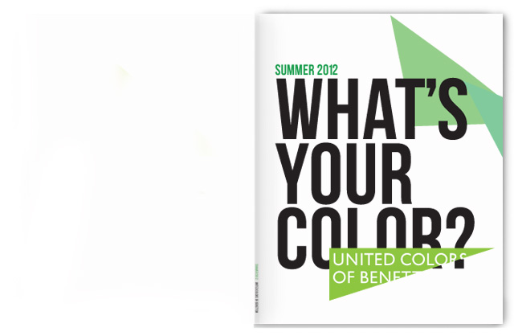
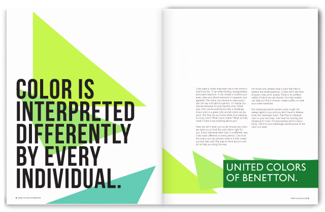
 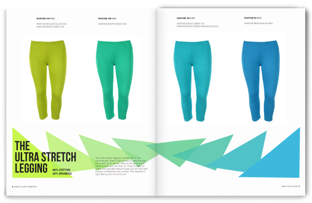
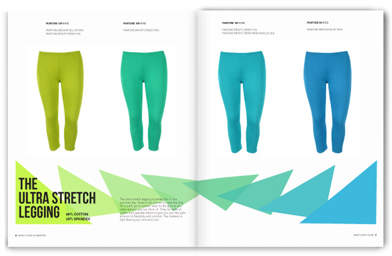
 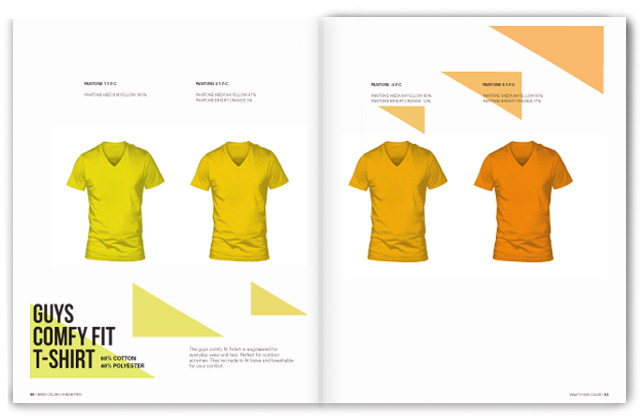
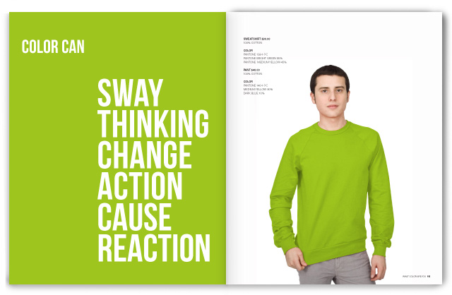
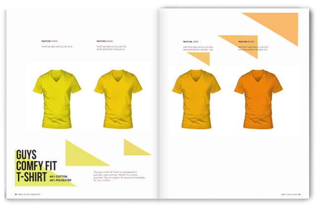
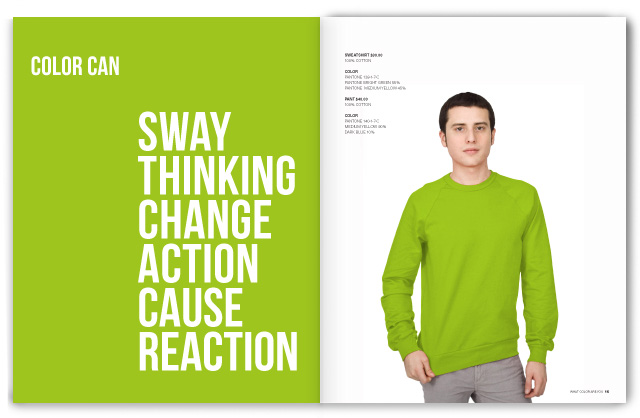
 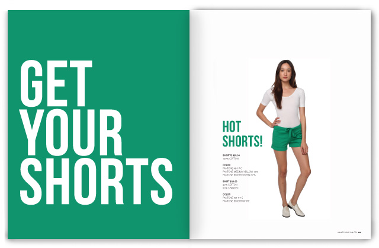
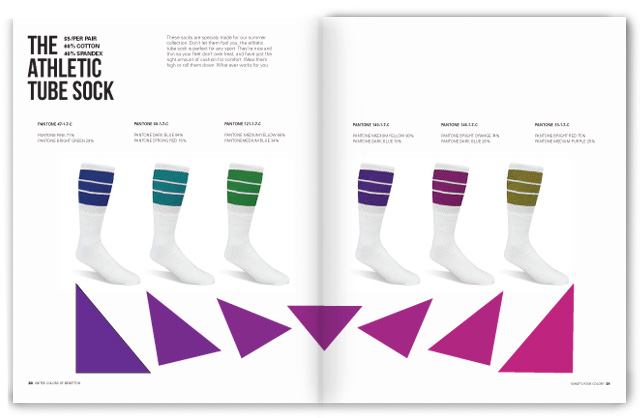
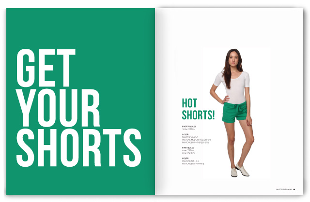
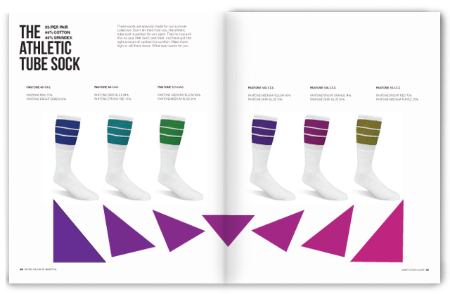

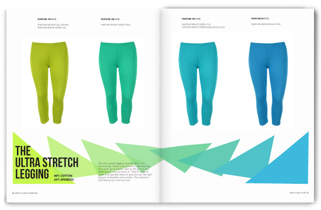
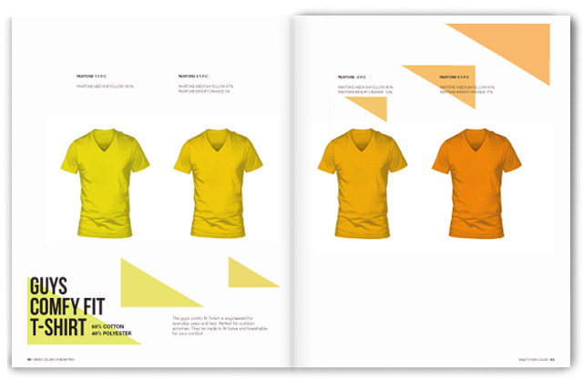
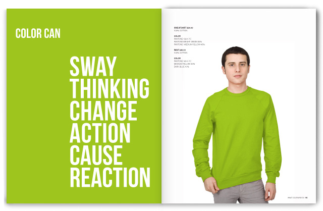
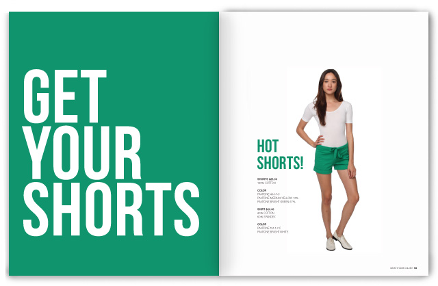
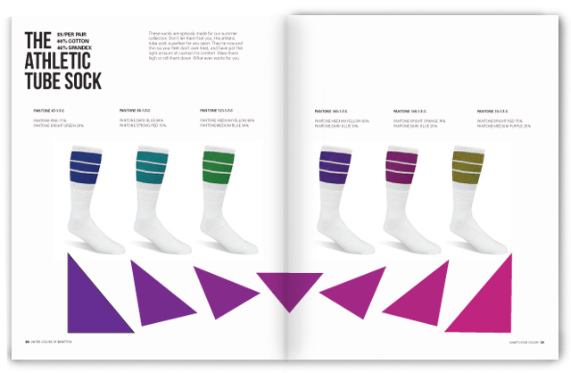
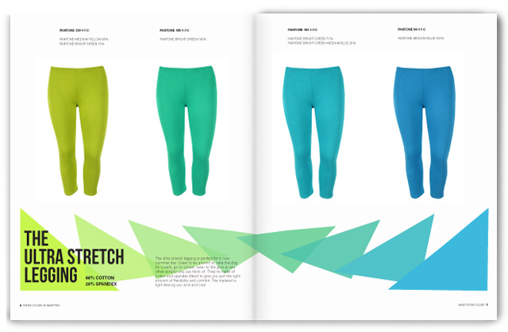
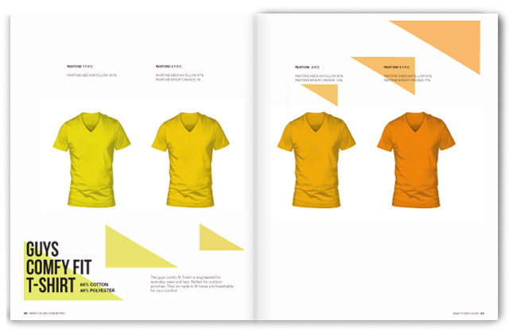
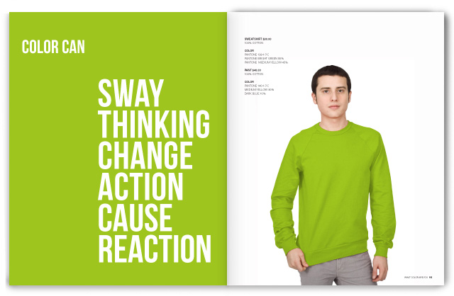
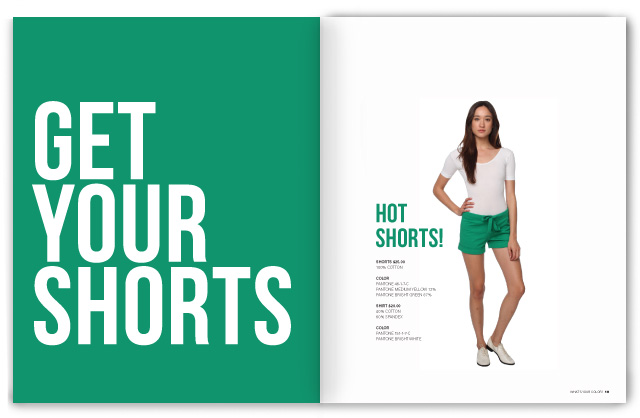
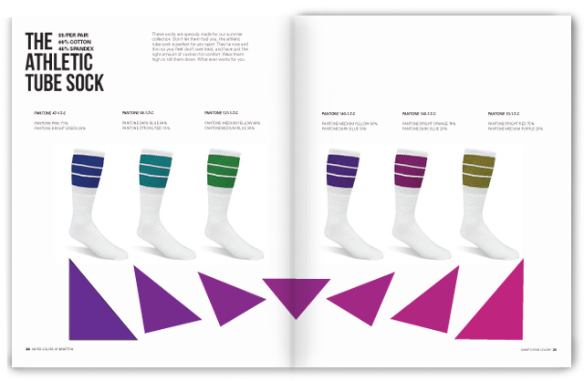
What's Your Color is a concept for a fashion catalogue combining 3 different brands. United Colors of Benetton, American Apparel, and Pantone. I really loved the name of United Colors but was disappointed with the clothes and I really love the bright colors found in American Apparel. The idea of this project was to tell a story through clothing. So the concept here is the journey of how a person finds there color and how color can influence people. It can make them hungry, sad, happy, mad. There are so many colors and shades of colors its hard to give them all a name. So I decided to use the Pantone system to help categorise the colors.